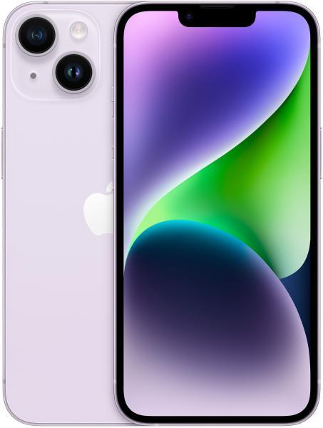

iPhone 15 Pro Max
Super Retina XDR‑kijelző 6,7 hüvelykes képátlójú, teljes előlapot kitöltő OLED‑kijelző 2796 x 1290 képpontos felbontás, 460 ppi képpontsűrűség Az iPhone 15 Pro Max kijelzőjének lekerekített sarkai gyönyörűen követik a telefon ívelt vonalait, és szabályos téglalapba illeszkednek. A kijelzőt teljes téglalapként mérve a képátló 6,69 hüvelyk (a tényleges kijelzőfelület kisebb)
iPhone 15 Pro
Super Retina XDR‑kijelző 6,1 hüvelykes képátlójú, teljes előlapot kitöltő OLED-kijelző 2556 x 1179 képpontos felbontás, 460 ppi képpontsűrűség Az iPhone 15 Pro kijelzőjének lekerekített sarkai gyönyörűen követik a telefon ívelt vonalait, és szabályos téglalapba illeszkednek. A kijelzőt teljes téglalapként mérve a képátló 6,12 hüvelyk (a tényleges kijelzőfelület kisebb).
iPhone 15

Super Retina XDR‑kijelző 6,1 hüvelykes képátlójú, teljes előlapot kitöltő OLED-kijelző 2556 x 1179 képpontos felbontás, 460 ppi képpontsűrűség Az iPhone 15 kijelzőjének lekerekített sarkai gyönyörűen követik a telefon ívelt vonalait, és szabályos téglalapba illeszkednek. A kijelzőt teljes téglalapként mérve a képátló 6,12 hüvelyk (a tényleges kijelzőfelület kisebb).
iPhone 14 Pro Max
Super Retina XDR‑kijelző 6,7 hüvelykes képátlójú, teljes előlapot kitöltő OLED‑kijelző 2796 x 1290 képpontos felbontás, 460 ppi képpontsűrűség Dynamic Island Mindig bekapcsolt kijelző Akár 120 Hz-es adaptív frissítési gyakoriságot biztosító ProMotion technológia HDR‑kijelző True Tone technológia Széles színtartomány (P3) Haptikus érintés 2 000 000:1 kontrasztarány (tipikus) 1000 nites maximális fényerő (tipikus); 1600 nites maximális fényerő (HDR); 2000 nites maximális fényerő (kültéri) Ujjlenyomatok ellen védő, zsírtaszító bevonat Több nyelv és karakterkészlet egyidejű megjelenítése
iPhone 14 Pro
Super Retina XDR‑kijelző 6,1 hüvelykes képátlójú, teljes előlapot kitöltő OLED-kijelző 2556 x 1179 képpontos felbontás, 460 ppi képpontsűrűség Dynamic Island Mindig bekapcsolt kijelző Akár 120 Hz-es adaptív frissítési gyakoriságot biztosító ProMotion technológia HDR‑kijelző True Tone technológia Széles színtartomány (P3) Haptikus érintés 2 000 000:1 kontrasztarány (tipikus) 1000 nites maximális fényerő (tipikus); 1600 nites maximális fényerő (HDR); 2000 nites maximális fényerő (kültéri) Ujjlenyomatok ellen védő, zsírtaszító bevonat Több nyelv és karakterkészlet egyidejű megjelenítése
iPhone 14
Super Retina XDR‑kijelző 6,7 hüvelykes képátlójú, teljes előlapot kitöltő OLED‑kijelző 2778 x 1284 képpontos felbontás, 458 ppi képpontsűrűség HDR‑kijelző True Tone technológia Széles színtartomány (P3) Haptikus érintés 2 000 000:1 kontrasztarány (tipikus) 800 nites maximális fényerő (tipikus); 1200 nites csúcsfényerő (HDR) Ujjlenyomatok ellen védő, zsírtaszító bevonat Több nyelv és karakterkészlet egyidejű megjelenítése
iPhone 13 Pro Max
Super Retina XDR-kijelző ProMotion technológiával 6,7 hüvelykes képátlójú, teljes előlapot kitöltő OLED‑kijelző 2778 x 1284 képpontos felbontás, 458 ppi képpontsűrűség Akár 120 Hz-es adaptív frissítési gyakoriságot biztosító ProMotion technológia HDR‑kijelző True Tone technológia Széles színtartomány (P3) Haptikus érintés 2 000 000:1 kontrasztarány (tipikus) 1000 nites maximális fényerő (tipikus); 1200 nites maximális fényerő (HDR) Ujjlenyomatok ellen védő, zsírtaszító bevonat Több nyelv és karakterkészlet egyidejű megjelenítése
iPhone 13 Pro

Super Retina XDR-kijelző ProMotion technológiával 6,1 hüvelykes képátlójú, teljes előlapot kitöltő OLED-kijelző 2532 x 1170 képpontos felbontás, 460 ppi képpontsűrűség Akár 120 Hz-es adaptív frissítési gyakoriságot biztosító ProMotion technológia HDR‑kijelző True Tone technológia Széles színtartomány (P3) Haptikus érintés 2 000 000:1 kontrasztarány (tipikus) 1000 nites maximális fényerő (tipikus); 1200 nites maximális fényerő (HDR) Ujjlenyomatok ellen védő, zsírtaszító bevonat Több nyelv és karakterkészlet egyidejű megjelenítése
iPhone 13

Super Retina XDR-kijelző ProMotion technológiával 6,1 hüvelykes képátlójú, teljes előlapot kitöltő OLED-kijelző 2532 x 1170 képpontos felbontás, 460 ppi képpontsűrűség Akár 120 Hz-es adaptív frissítési gyakoriságot biztosító ProMotion technológia HDR‑kijelző True Tone technológia Széles színtartomány (P3) Haptikus érintés 2 000 000:1 kontrasztarány (tipikus) 1000 nites maximális fényerő (tipikus); 1200 nites maximális fényerő (HDR) Ujjlenyomatok ellen védő, zsírtaszító bevonat Több nyelv és karakterkészlet egyidejű megjelenítése
iPhone 12 Pro Max

Super Retina XDR‑kijelző 6,7 hüvelykes képátlójú, teljes előlapot kitöltő OLED‑kijelző 2778 x 1284 képpontos felbontás, 458 ppi képpontsűrűség HDR‑kijelző True Tone technológia Széles színtartomány (P3) Haptikus érintés 2 000 000:1 kontrasztarány (tipikus) 800 nites maximális fényerő (tipikus); 1200 nites maximális fényerő (HDR) Ujjlenyomatok ellen védő, zsírtaszító bevonat Több nyelv és karakterkészlet egyidejű megjelenítése
iPhone 12 Pro

Super Retina XDR‑kijelző 6,1 hüvelykes képátlójú, teljes előlapot kitöltő OLED‑kijelző 2532 x 1170 képpontos felbontás, 460 ppi képpontsűrűség HDR‑kijelző True Tone technológia Széles színtartomány (P3) Haptikus érintés 2 000 000:1 kontrasztarány (tipikus) 800 nites maximális fényerő (tipikus); 1200 nites maximális fényerő (HDR) Ujjlenyomatok ellen védő, zsírtaszító bevonat Több nyelv és karakterkészlet egyidejű megjelenítése